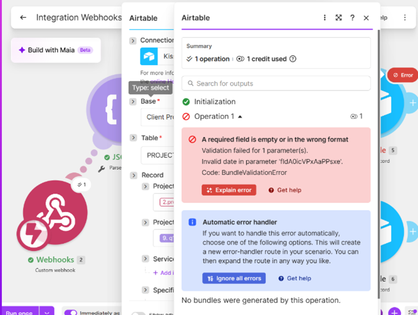
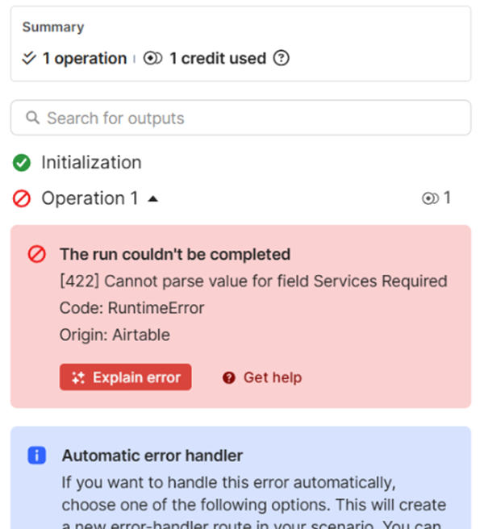

| Test Suite ID | Target Software / Layer | Testing Scope & Objectives | Execution Methodology | Total Scenarios |
|---|---|---|---|---|
| TS-SOFTR-01 | Softr (Frontend Portal) | User onboarding, form validation, file attachments, and role-based page access controls. | Manual Functional & GUI Testing | 5 Executed |
| TS-MAKE-02 | Make.com (Integration/API) | Webhook payload parsing, data transformations, multi-step scenario execution, and timeout limits. | Integration & API Testing | 4 Executed |
| TS-AIRTABLE-03 | Airtable (Backend DB) | Field type constraints, record persistence, linked relationships, and orphan record validation. | Database Integrity Testing | 3 Executed |
| Test ID | Component | Test Scenario | Steps to Execute | Expected Result | Result | Defect Ref |
|---|---|---|---|---|---|---|
| TC-WEB-001 | Softr Form | Verify mandatory field error handling on service booking form | 1. Open Request Portal. 2. Leave "Client Name" empty. 3. Click Submit. |
Form submission blocked; red inline error message displayed. | PASS | N/A |
| TC-WEB-002 | Softr Portal | Verify Role-Based Access Control (RBAC) on Admin Dashboard | 1. Log in as regular Client account. 2. Attempt direct navigation to /admin-metrics. |
Access denied; user redirected to 403 unauthorized page. | PASS | N/A |
| TC-INT-001 | Make.com / Airtable | Validate date field mapping between incoming Webhook and Airtable Base | 1. Submit date picker input via Softr form. 2. Inspect Make.com Airtable module execution. |
Date parsed into ISO-8601 format and written cleanly to database record. | FAIL | DEF-001 |
| TC-INT-002 | Make.com / Airtable | Verify multi-select choice parsing for "Services Required" field | 1. Select multiple checkboxes under "Services Required". 2. Submit form and inspect scenario logs. |
Make.com converts array items into valid Airtable select options. | FAIL | DEF-002 |
| TC-DB-001 | Airtable DB | Verify record persistence across linked relational tables | 1. Create new project request. 2. Query Tasks table in Airtable for linked Client Record ID. |
Task is automatically linked to correct parent Client record without orphan data. | PASS | N/A |
| Subsystem: | Integration Pipeline (Make.com Webhook → Airtable API) | Environment: | Staging / Make.com Scenario Execution Engine |
| Reporter: | QA Application Tester | Status: | OPEN (Defect Logged) |
Description: Executing the service request workflow triggers a BundleValidationError on the Airtable Create/Update Record module due to an unparsed date parameter passed from the custom webhook JSON payload.
Steps to Reproduce:
Custom Webhooks module to Make.com.Expected Result: Make.com formats the raw date string into an ISO-8601 compliant date before passing to Airtable (200 OK / Record Created).
Actual Result: Airtable module throws Code: BundleValidationError with error message: "A required field is empty or in the wrong format. Validation failed for 1 parameter(s). Invalid date in parameter 'fldA0icVPxAAPPsxe'."

Figure 1.1: Make.com scenario execution inspector showing BundleValidationError on field fldA0icVPxAAPPsxe (image_c58d66.png).
formatDate() inline function inside Make.com or configure a fallback error handler route to handle unparseable dates gracefully.
| Subsystem: | Data Ingestion Pipeline (Softr Form → Make.com Router → Airtable Base) | Environment: | Staging / Make.com Scenario Execution Engine |
| Reporter: | QA Application Tester | Status: | OPEN (Defect Logged) |
Description: Submitting multi-select option values from the web portal form causes an unhandled HTTP 422 error at the Airtable API mapping step due to parameter string format mismatches.
Steps to Reproduce:
Expected Result: Make.com parses array strings into valid Airtable option choices, successfully creating a record (HTTP 200 OK).
Actual Result: Airtable API returns an HTTP 422 error: "[422] Cannot parse value for field Services Required. Code: RuntimeError. Origin: Airtable".

Figure 2.1: Make.com inspector showing HTTP 422 RuntimeError on 'Services Required' field mapping (image_c58da3.png).
split() formula in Make.com to convert comma-separated string payloads into an explicit Array collection that Airtable accepts for multi-select fields.